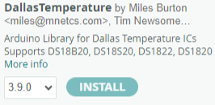

Activity 1: Exploring IoT Sensors with Arduino
Temperature, Light, and Moisture Detection
Topic: Internet of Things
Time: 1 Hour
Description
In this activity, you’ll learn how to use common IoT sensors with an Arduino to collect environmental data. You’ll work with a digital temperature sensor, a light-dependent resistor (LDR) sensor, and a soil moisture sensor. You’ll also control an LED based on sensor readings, reinforcing the connection between sensing and action, a core concept in IoT applications.
Materials Required
- Arduino Uno (or compatible board)
- USB cable
- Breadboard and jumper wires
- Gikfun DS18B20 Waterproof Digital Temperature Sensor with Adapter
- Teyleten Robot 5MM LDR Photosensitive Sensor Module
- Soil Moisture Sensor
- LED
- 220Ω resistor
- Computer with Arduino IDE installed (Note: The newest version is preferred)
Extra Sources
Steps to Conduct the Activity
Step 1: Topic Explanation
- Introduce the Internet of Things (IoT) as the network of devices embedded with sensors, software, and other technologies to collect and exchange data.
- Explain how sensors collect physical world data, while actuators (like LEDs or motors) perform actions based on that data.
- Sensors we’ll use:
- DS18B20 Temperature Sensor: Measures temperature in °C and °F.
- LDR Light Sensor: Detects light levels.
- Soil Moisture Sensor: Measures the amount of moisture in the soil.
Step 2: Explain the Problem
- IoT devices often monitor environmental conditions and take action automatically.
- In this activity:
- We’ll read sensor data.
- We’ll make an LED turn on or off based on temperature or light levels.
- We’ll monitor soil moisture for potential smart agriculture applications.
Step 3: Interactive Time
Part 1: Temperature Sensor with DS18B20
Setup:
- Connect DS18B20:
- GND to GND
- DAT to Digital Pin 2
- VCC to 5V (Note: Some DS18B20 sensors require a 4.7kΩ resistor between DAT and VCC, but many breakout boards include it already.)
- Install the DallasTemperature and OneWire libraries in Arduino IDE (via Library Manager).

- Make sure the right baud rate is Selected : 9600
Code to Read Temperature:
#include <OneWire.h>
#include <DallasTemperature.h>
#define ONE_WIRE_BUS 2
OneWire oneWire(ONE_WIRE_BUS);
DallasTemperature sensors(&oneWire);
void setup() {
Serial.begin(9600);
sensors.begin();
}
void loop() {
sensors.requestTemperatures();
Serial.print("Temperature: ");
Serial.print(sensors.getTempCByIndex(0));
Serial.print("°C | ");
Serial.print((sensors.getTempCByIndex(0) * 9.0) / 5.0 + 32.0);
Serial.println("°F");
delay(500);
}
Extend: Control an LED Based on Temperature
Add an LED to Pin 13 with a 220Ω resistor to GND.
LED turns ON if temperature ≤ 85°F.
#include <OneWire.h>
#include <DallasTemperature.h>
#define ONE_WIRE_BUS 2
OneWire oneWire(ONE_WIRE_BUS);
DallasTemperature sensors(&oneWire);
void setup() {
pinMode(13, OUTPUT);
Serial.begin(9600);
sensors.begin();
}
void loop() {
sensors.requestTemperatures();
float tempF = (sensors.getTempCByIndex(0) * 9.0) / 5.0 + 32.0;
Serial.print("Temperature: ");
Serial.print(tempF);
Serial.println("°F");
if (tempF <= 85) {
digitalWrite(13, HIGH);
Serial.println("Light On!");
} else {
digitalWrite(13, LOW);
Serial.println("Light Off!");
}
delay(500);
}Part 2: Light Detection with LDR Sensor
Setup:
Connect LDR sensor:
- VCC to 5V
- GND to GND
- OUT to Analog Pin A0

Code to Read Light Level:
void setup() {
Serial.begin(9600);
}
void loop() {
unsigned int AnalogValue = analogRead(A0);
Serial.println(AnalogValue);
delay(250);
}Extend: Turn LED On/Off Based on Light Level
- LED turns ON if light value is below threshold (e.g., < 60).
void setup() {
pinMode(13, OUTPUT);
Serial.begin(9600);
}
void loop() {
unsigned int AnalogValue = analogRead(A0);
Serial.println(AnalogValue);
if (AnalogValue <= 60) {
digitalWrite(13, HIGH);
Serial.println("Light On!");
} else {
digitalWrite(13, LOW);
Serial.println("Light Off!");
}
delay(250);
}Part 3: Soil Moisture Sensor
Setup:
- Connect moisture sensor:
- VCC to 5V
- GND to GND
- Signal to Analog Pin A0
- Code to Read Moisture Level:
void setup() {
Serial.begin(9600);
Serial.println("Simple Data Reading Program - send data over serial");
}
void loop() {
int soilMoistureValue = analogRead(A0);
Serial.print("Moisture reading: ");
Serial.println(soilMoistureValue);
delay(5000);
}- Interpret the readings: Higher values mean dry soil, lower values mean wet soil.
Reflection
- What are some real-world applications of these sensors?
- How could combining multiple sensors improve automation or decision-making?
- What challenges did you face in setting up or reading the sensors?
Learning Outcomes
- Understand the role of sensors in IoT systems.
- Interface multiple types of sensors with Arduino.
- Translate sensor data into actionable outputs (like controlling LEDs).
- Gain experience troubleshooting wiring, code, and sensor behavior.